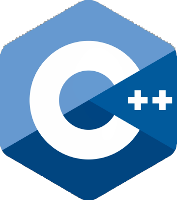
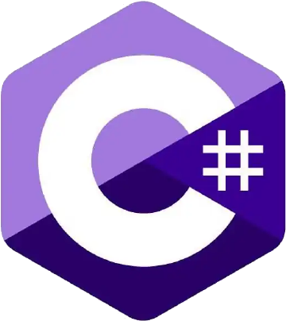

{ }
git push
make flash
0x1F
;
HELLO, WORLD 👋
我做软件，也做硬件。
从一行代码到一块电路板，全链路把想法做成能跑的东西。


01001100 01001001 01001110 01010101 01011000 00100000 01000101 01001100 01000110
01000011 00100011 00100000 01100011 01101111 01100100 01100101
01001100 01101001 01101110 01110101 01111000 00100000 01101001 01110011 00100000 01100001 01110111 01100101 01110011 01101111 01101101 01100101
$ readelf -h ./a.out
Magic: 7f 45 4c 46 02 01 01 00
Class: ELF64 · LSB · x86-64
Sections: .text .rodata .data .bss
01 · SOFTWARE
软件开发
从界面到服务端，喜欢把东西做得又快又稳。
精选项目
⚙️
项目名称 A
一句话说明它解决什么问题、你负责哪部分。
仓库 ↗